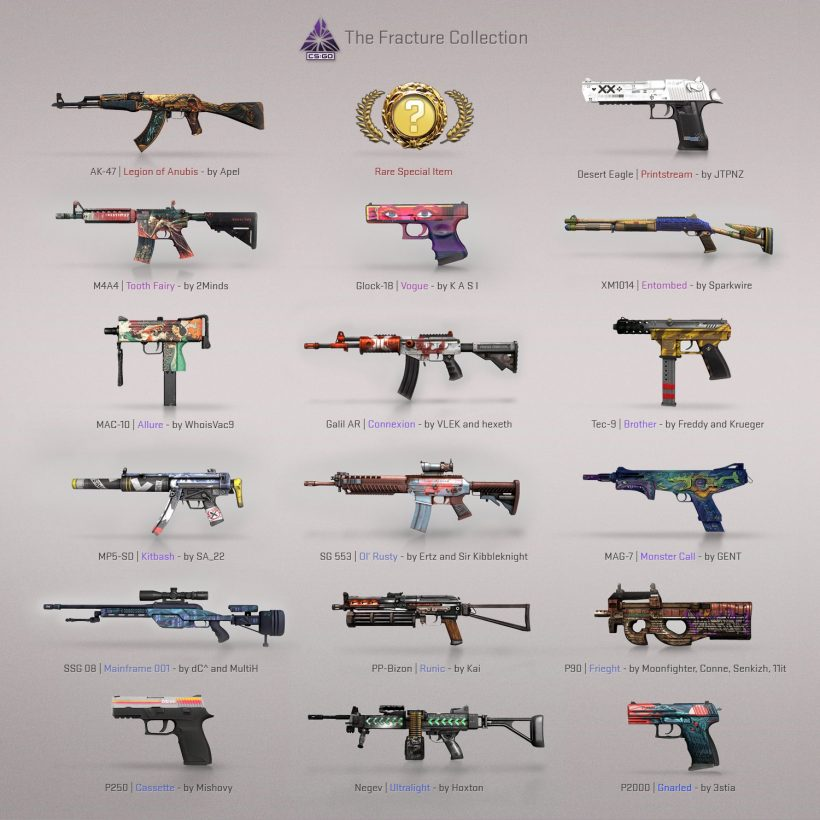

CSGO RushB中文网
CSGO RushB中文网
反恐精英：全球攻势（CS:GO）2020年8月7日更新补丁大小332MB，主要内容为改进红帆要塞等3张地图，以及推出新箱子Fracture Case。
游戏客户端版本：1.37.6.3 (version 1175)
请某些平台/网站不要抄袭本站。
新箱子
今天的更新包括一些网络改进，以及红帆要塞、失落沼泽和阿努比斯地图修改，还有一个新箱子！
介绍断裂武器箱（先这么翻译）收藏品，包含了17件社区创作皮肤，以及裂网收藏品匕首。

以下是更新日志
断裂武器箱
加入新的断裂武器箱，包含了17件社区创作皮肤，以及稀有物品裂网收藏品匕首。
杂项
更新了红帆要塞主菜单背景。
修复了一些VPK篡改相关漏洞。
不再支持-unstrusted启动项。
网络
SDR网络协议的多项改进。
SDR路由选择逻辑改进。
修复了SDR网络到期后不再启用的错误。
增强稳定性。
地图
阿努比斯
修复了一些模型碰撞、贴图重叠、不可见的贴图错误。
修复了桥附近能透过墙壁发现敌人的错误。
修复了棕榈树阴影。
修复了B主路的围墙。
修复了导致武器掉落进楼梯和地板地形内错误。
投掷窗口重新加回B点。
中路双扇门使用新贴图。
各种小修复。
红帆要塞
优化：
地图所有区域性能都大幅改善。
调整了渲染距离以提高性能。
添加了更多hint/skip笔刷来分隔空心模型。
将爬山虎模型添加进prop组合以提高一次性渲染多个的性能。
玩法：
降低了A点部分墙壁高度。
T进攻A点大道的地图边界石头改成砖墙，以提高识别度，包括扔过来的投掷物。
中路到B连接位置添加了木箱掩体。
移除了中路出口到A连接的掩体，一些木箱和木桶。
移除了A点后方小道附近的掩体。（？）
调整了小道掩体。
调整了T进攻A点下路的掩体。
调高了CT至A点、A点周围的天空盒，允许玩家站在A点墙上（单人可通过墙缺口跳到箱子上再上墙）。
调高了CT至B入口天空盒。
调整了死亡竞赛A点附近的复活点。
杂项：
调整了地图照明以提高识别度。
修复了多个灌木丛闪烁的错误。
删除了部分树叶模型阴影。
修复了地图周围各种缺失的问题。
修复了 地图周围各种错位的模型。
改进了码头的木桩碰撞模型。
改进了T到A点路上岩石的碰撞模型。
修复了多个会卡住C4的位置。
如果玩家仍往小船扔下C4，C4会传送回到岛上。
在A点、B点和码头周围添加了多个C4重置触发区域。
修复了码头木车上缺了一块的防水布木箱模型。
修复了T出生点藏宝图，以应用准确的名称。
更新了地图介绍。
失落沼泽
主要变化：
提高了FPS。
替换了水材质。
提高了部分区域亮度。
更新了雷达。
修复了更多碰撞模型。
中路：
封闭了旧锯片附近的角落。
T入口加入凹槽。
B点：
提高了T方向入口亮度。
T出生点：
缩小了细缝，防止武器掉入。